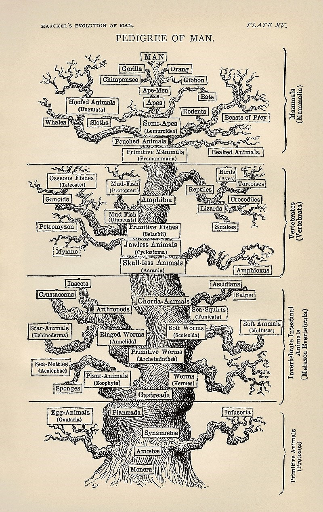
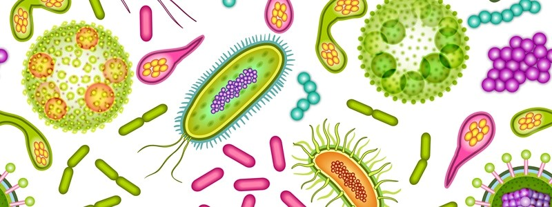
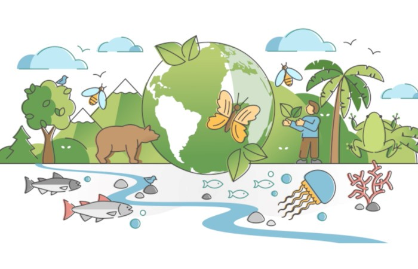
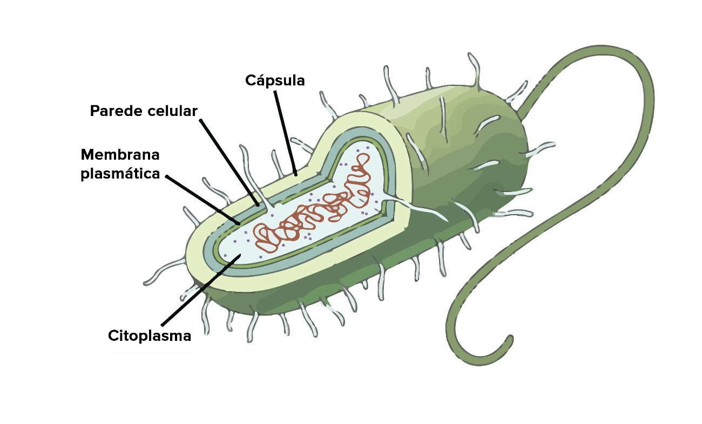
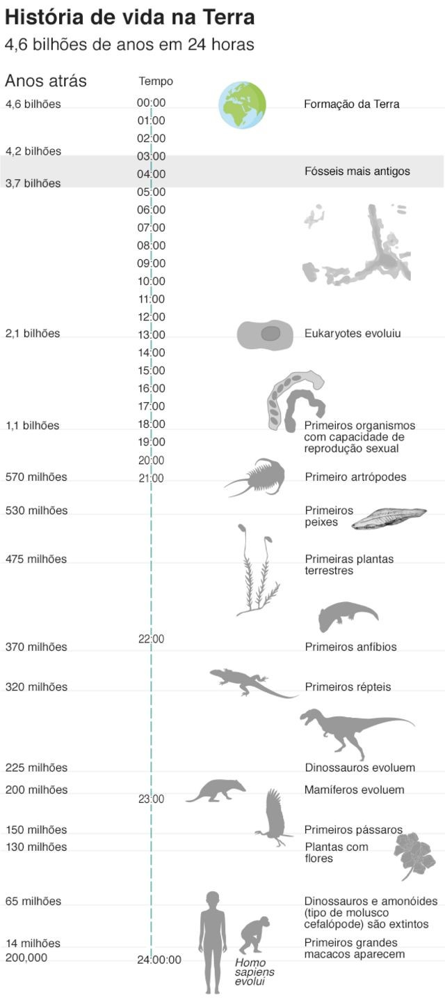
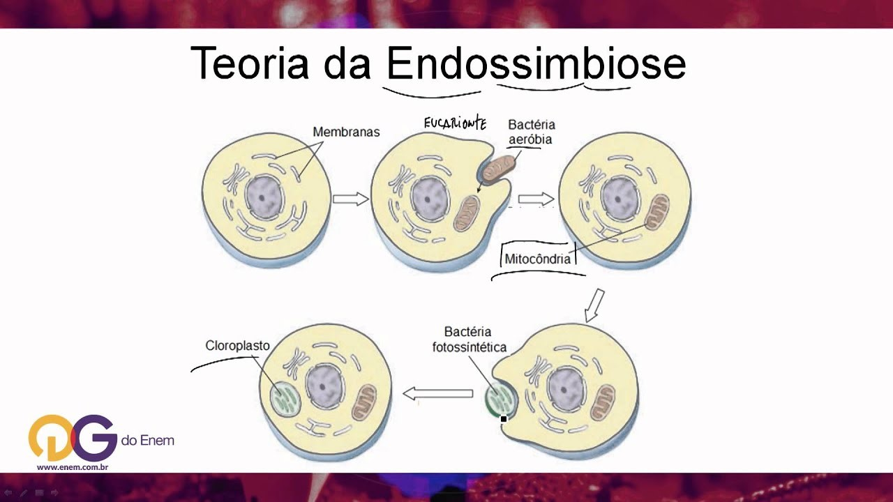
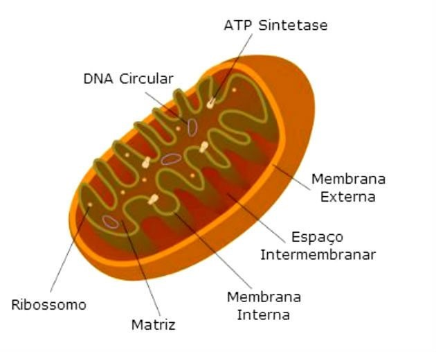
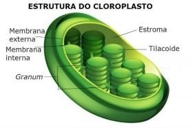

Pré-Eucariotos
Introdução
Em meio a imensidão da biodiversidade terrestre, pode-se evidenciar uma imensidão da biodiversidade de organismo de complexidades e características completamente distintas nas mais diversas regiões do mundo. Com intuito de facilitar os métodos de identificação dos seres vivos foram criados alguns mecanismos de padronização destas classificações, como a categorização de taxos, criada por Karl Von Linné em 1735, ou a separação dos indivíduos por reino, por Ernst Haeckel em 1866. No entanto em meio a imensidão dos seres vivos surgem algumas perguntas, qual seria a unidade de vida primordial, como foi dado a criação desse organismo, quais são as similaridade desses seres primordiais para as estruturas que conhecemos hoje ?este trabalho se propõem a estigar sua curiosidade e responder essas perguntas.
Seres procariontes e processo de evolução
De acordo com o cientista Robert Hooke e a teoria celular, a unidade morfofisiológica mínima de todos os seres vivos , seriam observadas através das células, que compunham suas atividade, metabolicas reprodutivas e sintetizantes de forma isolada ou como um conjunto , podemos evidenciar a presença dessa unidade minima de vida nos mais amplos reinos biológicos, sendo divididas entre entre celulas procariontes incluido os grupos Bacteria e Archaea, e eucariontes incluido o reino Plantae e Animalia.
 Acredita-se que por conta das circunstancias do surgimento da vida as primeiras células foram as procariontes, oriundas do processo da evolução molecular,devido a organização de um organismo procarionte se demonstrar mais simples do que uma estrutura eucarionte, na qual o material genético fica disperso no citoplasma e não apresentarem organelas membranosas
De acordo com a teoria da evolução molecular as células procariontes surgiram a 3,5 bilhões de anos enquanto as células eucariontes foram surgir em 1,4 bilhões de anos depois. Podemos obter evidencias de alguns fosseis residuais encontrados por o geologo J. William Schopf na Australia em rochas relativamente inalteradas , observou-se que algumas cadeias desta cadeias agregadas eram semelhantes as cianobacterias(células procariontes) comteporanêas. Atráves do estudo dos isotopos de carbono presentes na amostra devido a realização de fotosintese dessa célula, pode-se observar que as moléculas de carbono possuiam isotopos de C¹²:C¹³, caracteristicos do processo de fotossintese em cianobacterias, assim conseguiram determinar através do decaimento do carbono a idade desta bacteria.
Após o surgimento das celulas procariontes a vida na terra começous um grande processo de complexão auxiliado por mecanismos de seleção natural e mutações genicas , que originaram os seres eucariontes pentecentes dos quais conhecemos hoje .
A Origem
A origem dos seres eucariontes
Através de alguns fosseis de celulas eucariontes encontrados , estima-se que as células eucarióticas tenham surgindo em aproximadamente 1,7 bilhões de anos . Segundo a cientista Lynn Mangulis admite que as células eucarióticas teriam surgido por intermédio de uma associação Endosimbiótica de células procariontes, nas quais são caracterizadas por benéficio mutuo de ambos os participantes essa teoria foi chamada por Lynn de Teoria da Endosimbiose ,acredita-se que por este processo se explica a origem das celulas eucariontes ao fato das organelas mitocondrias e cloroplastos possuirem um codigo genetico próprio distinto da celula eucarionte da qual habitam inumeros organismos do reino animalia e plantae. Segundo Lynn, as primeiras celulas eucariontes teriam sido resultado de duas celulas procariontes cujo as quais uma possuia a capacidade de realizar respiração celular, utilizando assim o gas oxigênio para criar um gradiente de protons em sua membrana molécular devido a alta eletronegatividade do oxigênio sua capacidade de produzir energia se provava mais eficientes que a dos outro metodos de obtenção energética. Enquanto a outra célula passou por um processo evolutivo no qual a membrana plasmatica iniciou com uma invaginação, que posteriormente originou estruturas conhecidas hojes como envoltorio nuclear, reticulo endoplasmatico entre outras importantes organelas membranosas, porém esta ainda se manteve como um organimos anaeróbico obtendo energia de forma não tão eficiente por fermentação.
De acordo com Mangulis após a celula procarionte anaerobica realizar a fagocitose da bacteria aerobica predada,a celular absorvida continuou no citoplasma da hospedeira sem que houvesse uma degradação, e com o tempo permiu que o fagocito passase a ter capacidade de realizarrespiração celular com auxilio da bacteria ingerida , fazendo com que assim em vez de realizar o processo de fermetação para obtenção de energea passase a utilizar da respiração celular, obtendo um aumento na produção de energia significativa, que possibilitou o surgimento de organismo mais complexos a vida. Acredita-se que as bacterias que teriam sido fagocitadas seriam mitocondria e cloroplastos primitivos.
As principais características que apoiam esta teoria, são pautadas na semelhança do cloroplasto e mitocôndrias com bactérias, levando em consideração que este possuem material geneticó semelhante ao encontrado em bacterias , além de possuirem ribososmos própios 70s caracteristicos de procariontes, divergindo dos ribososmos 80s presentes nas celulas eucariontes, além de ambas organelas possuirem a capacidade de realizar autoduplicação de forma independentes.
Mas o que são Mitocondrias e Cloroplastos ?
Mitocôndrias
Presente na maioria dos seres eucariontes as mitocondrias são responsaveís por a produção de ATP, energia primordial a vida
Cloroplastos
Responsavéis pelo fornecimento de pigmentos primordias ao processo de fotosintese como a clorofila.
Pós-Eucariotos
Os Eucariontes
Divididos entre celulas animais e vegetais , ao contrario das células procariontes as células eucariontes possui um envoltório nuclear separando pela mebrana nuclear , além de possuirem uma estrura maior do que a das celulas procariontes, com uma complexação maior , a compartimentalização é a principal caracteristica das celulas eucariontes permitindo com que a celula cresça sem danificar suas funções. As principais diferenças entre as celulas eucariontes animais e vegetais e a presença de lissosomos em animais e a paredere celular, os plastos e vaculo em celulas vegetais